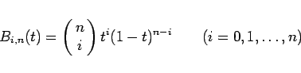
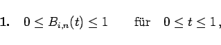
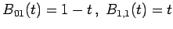
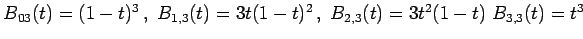
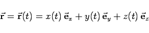
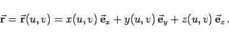

Inhalt Index DeskTop Bronstein

 Numerische Mathematik Darstellung von Kurven und Flächen mit Hilfe von Splines
Numerische Mathematik Darstellung von Kurven und Flächen mit Hilfe von Splines


|  | (19.247) |
und nutzt vor allem die folgenden Eigenschaften aus:
|  | (19.248) |
Die Formel (19.249) folgt unmittelbar aus dem binomischen Satz.
| Beispiel A |
|
 |
| Beispiel B |
|
. |
|  | (19.250) |
beschrieben. Dabei ist t der Kurvenparameter. Die entsprechende Darstellung für eine Fläche lautet
|  | (19.251) |
Dabei sind u und v die Flächenparameter.